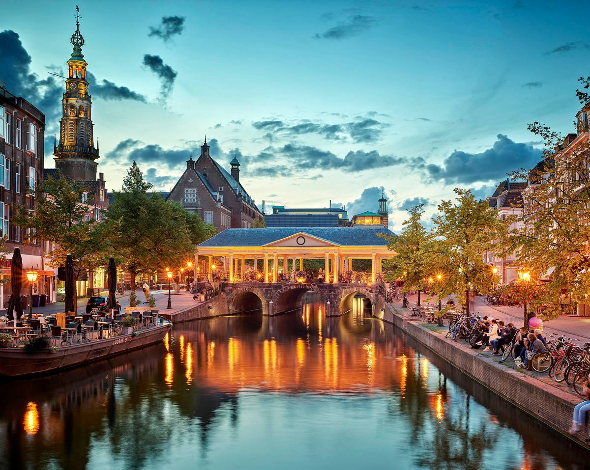

Al mijn reizen:

Frankrijk
Frankrijk is een leuke bestemming waar je kunt zwemmen, lekker kunt eten en mooie plekken kunt ontdekken.
1 / 4
Dit is mijn eerste website die ik met GitHub Pages heb gemaakt. Op deze website laat ik zien wat ik heb geleerd over verschillende onderwerpen uit de informatica lessen.
Ik ben Jimmy, ik ben 15 jaar oud en ik woon in Leiden. Ik zit op het vlietlandcollege in havo 4. Ik heb 1 zusje en die is 11 jaar oud. In mijn vrije tijd spreek ik af met vrienden en vriendinnen, ook sport en werk ik vaak. Ook hou ik erg van reizen, hieronder staan alle reizen die ik heb gemaakt.

Voor de opdracht maak ik een website over verschillende onderwerpen zoals het binaaire stelsel, kleurmodellen, compressie en AI. Ik leg de onderwerpen uit door middel van tekst, afbeeldingen en video's
Frankrijk is een leuke bestemming waar je kunt zwemmen, lekker kunt eten en mooie plekken kunt ontdekken.
1 / 4